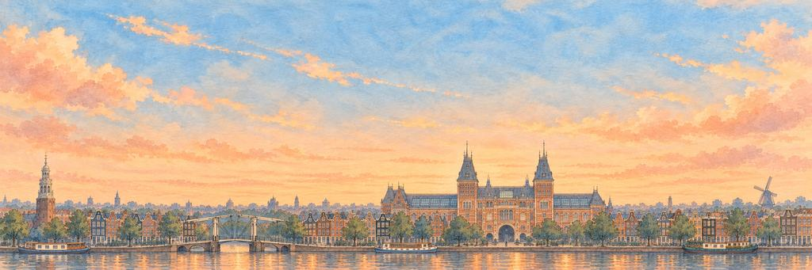

Amsterdam paper plane game
Follow Amsterdam's canals, past the leaning houses, all the way to the Rijksmuseum.
Narrow canal houses all the way. Get past the heron, then the windmill.
A dam on the Amstel
Amsterdam began more than 700 years ago as a fishing village beside a dam on the river Amstel, which gave the city its name. In the 1600s its ships traded across the world, and the city dug rings of canals around its old centre. Today it has more than 100 kilometres of canals and about 1,500 bridges.
“I'd count the bridges from the sky and lose count.”
The landmarkThe Rijksmuseum
The Rijksmuseum, the national museum of the Netherlands, opened in its palace-like building in 1885. Its most famous painting, Rembrandt's The Night Watch, is more than four metres wide. A passage runs straight through the middle of the building, and every day cyclists ride through it, right under the museum.
Neighbourhoods
The Oude Kerk, or Old Church, is the oldest building in Amsterdam. It was consecrated in 1306 and stands in De Wallen, in the old centre. West of the Prinsengracht lies the Jordaan, a working-class district begun in 1612. South of the centre, in De Pijp, the Albert Cuyp Market started in 1905 as a Saturday evening market. It became a daytime market, open six days a week, in 1912, and it is now the busiest street market in the Netherlands.
The canals and the IJ
The three main canals of the canal ring are the Herengracht, the Keizersgracht and the Prinsengracht. Work on them began in 1613, and in 2010 the canal ring became a UNESCO World Heritage Site. To the north, the wide waterway of the IJ separates the old centre from Amsterdam-Noord. Free ferries carry people and bikes across it from Centraal Station. The station opened on 15 October 1889 on three artificial islands in the IJ. Its architect, Pierre Cuypers, also designed the Rijksmuseum.
The skyline
The old city is low, and its church towers still rise above the canal houses. The tallest is the Westertoren, the 87-metre tower of the Westerkerk, which opened in 1631. Rembrandt was buried in the church in 1669. Anne Frank could see the tower's clock from the attic where she hid, and she wrote that the sound of its bells was a comfort.
When to see it
Come after dark in winter. Each year from late November to January, the Amsterdam Light Festival fills the centre with works of light art. You can follow the route on foot or from a canal boat.
Who keeps the wish in Amsterdam.
An Elite wakes first; the Boss guards the wish itself. Hit their weak points for a BONK!, land the last blow for a KO!, and each one grins and takes a bow.
-
The Elite


The Herring Heron
Waits at every fish stall · Keeper of the canals
Grey herons live all over Amsterdam, on houseboats, bridges and canal edges. Many have learned that the fish stalls drop scraps, so they wait beside them, very still, like customers in a queue. The Dutch like their herring raw, lifted by the tail and eaten in a few bites, so the herons fit right in.
“I'd buy him a herring of his own.”
-
The Boss

The Windmill Giant
Turns with every north wind · Keeper of the dykes
For hundreds of years Dutch windmills pumped water out of low, wet land, so people could live and farm where there had been lakes and marsh. Millers even sent messages with their sails: stopped just before the top meant joy. Amsterdam still has windmills inside the city, such as De Gooyer beside a canal.
“I'd climb up and ride a sail.”
Amsterdam cleared. From above, the canals made rings, like a tree trunk.
- The heron never let go of its herring. It just waited, the way it waits at the fish stall.
- The windmill yawned between turns. I think I woke him up.
The plane reaches Amsterdam from London.